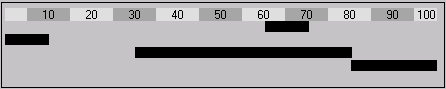
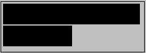

<b>taille,position
Trace une barre horizontale.
Taille et position sont exprimées en pourcentages par rapport à la taille de l'objet graphique. Ces valeurs peuvent être des nombres décimaux.
Exemple :
ff.graph = "<a>' ',5;10,10;20,10;30,10;40,10;50,10;60,10;70,10;80,10;90,10;100,5<S>"
ff.graph &= "<b1>10;60" ; pos=60% taille=10%
ff.graph &= "<s>"
ff.graph &= "<b1>10;0"
ff.graph &= "<s>"
ff.graph &= "<b1>50;30"
ff.graph &= "<s>"
ff.graph &= "<b1>20;80"

<b1>taille,position
<b2>taille,position
<b3>taille,position
Ces commandes sont identiques à <b>. Les variantes proposées par ces commandes concernent uniquement le dessin des extrémités des barres. Cela permet de visualiser le fait que la barre n'ait pu être entièrement dessinée car elle dépasse les bornes.
b1 : la barre déborde à gauche.
b2 : la barre déborde à droite.
b3 : la barre déborde à droite et à gauche.
<max>nnn
Cette commande permet de spécifier la valeur maximale pour une barre en vue de simplifier les calculs. Par défaut, la valeur maximale est 100, et donc une barre de 100% occupe toute la largeur de l'objet.
Exemple :
ff.graph &= "<b>100;0"
ff.graph &= "<s>"
ff.graph &= "<max>200" ; changement d'échelle
ff.graph &= "<b>100;0" ; la même barre occupe la moitié

Encadrement et hachurage des barres <cc> <ha>